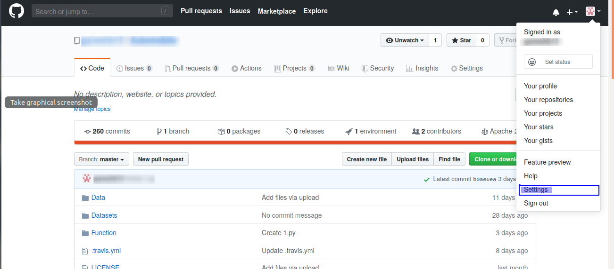
1.Go to selecting by clicking on the blue rectangle.
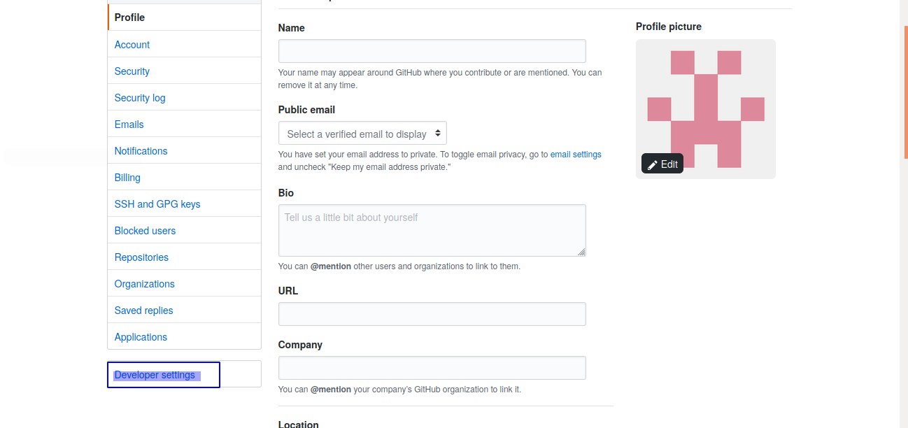
2. Click on the blue rectangle on "Developer settings"
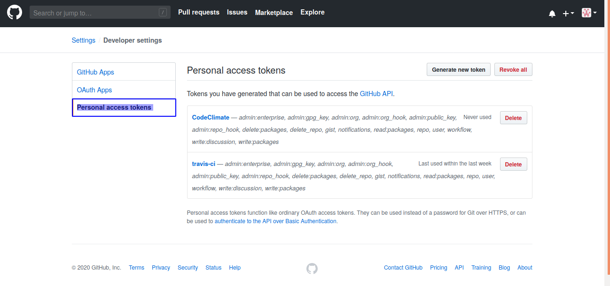
3. Click on the blue rectangle on "Personal access tokens"
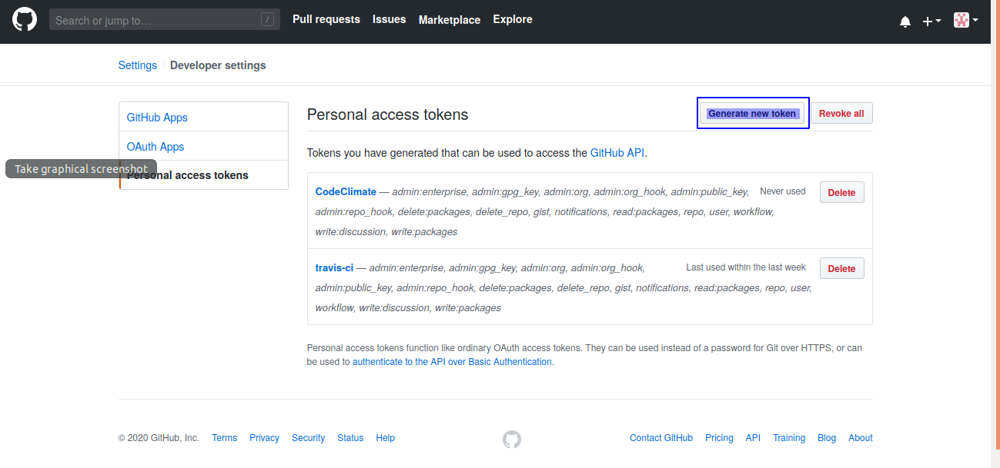
4. Click on the blue rectangle on "Generate new token"
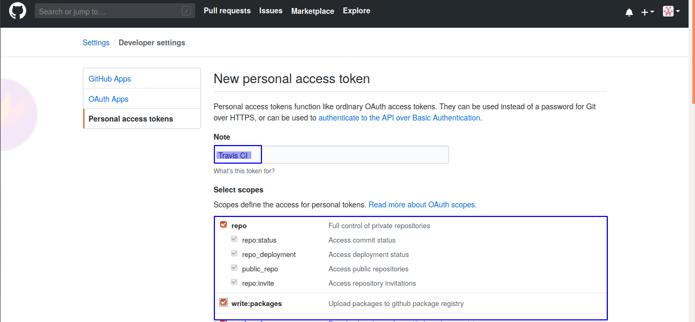
5. Give a suitable name in the “Note” section. And also tick all the below section according to the access needs.
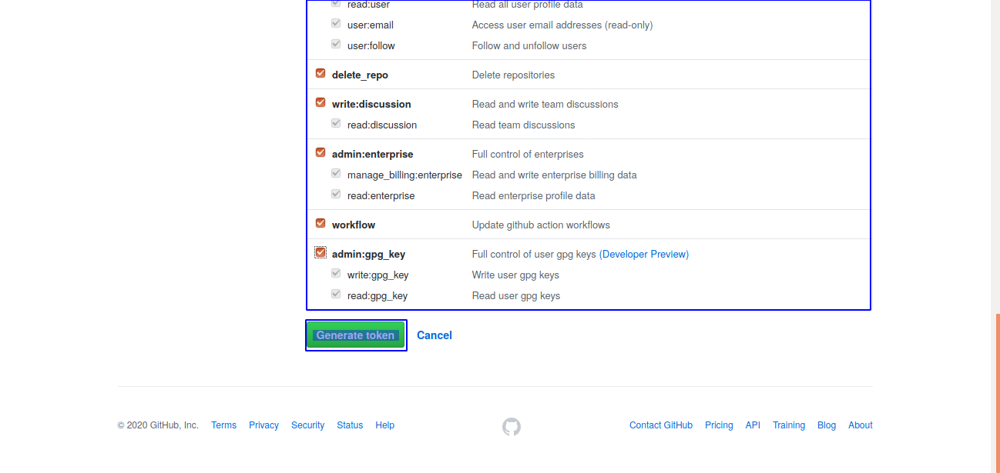
6. Click on the blue rectangle on "Generate token"
❮
❯
2.Follow the below setps in the Travis CI.And past the token in the last step which was copied in GIT.
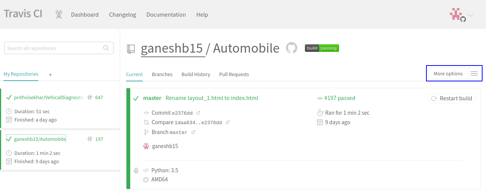
1.Go to "More options" by clicking on the blue rectangle.
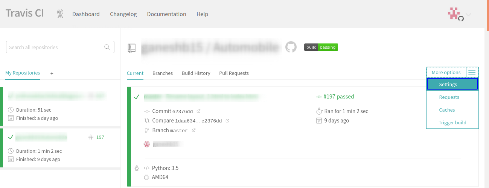
2. Go to "Selecting" by clicking on the blue rectangle.
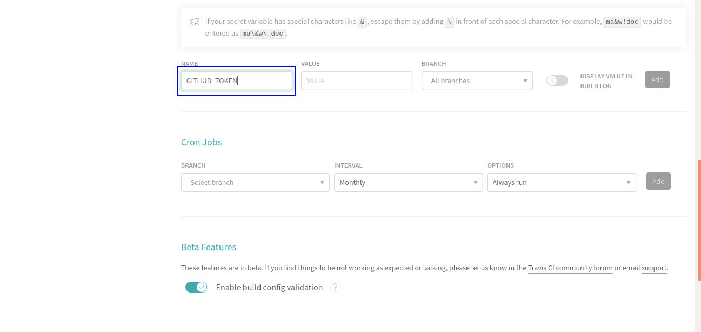
4. Write "GITHUB_TOKEN" in the blue rectangle.
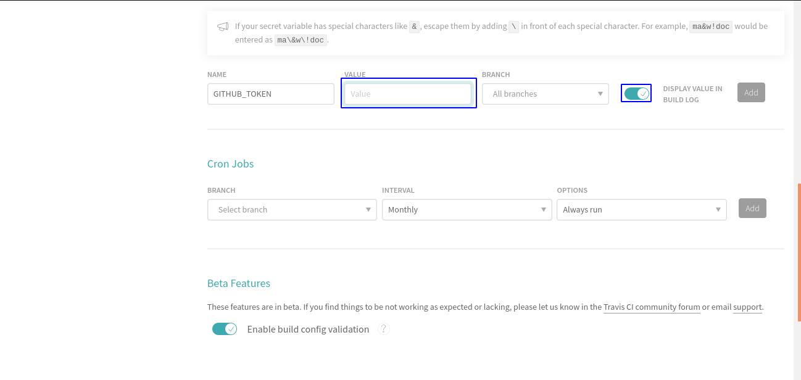
5.Past the Token copied from GIT here.
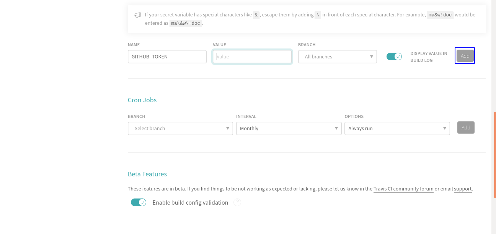
6. Click on the blue rectangle on "Add". To "Add" the token.
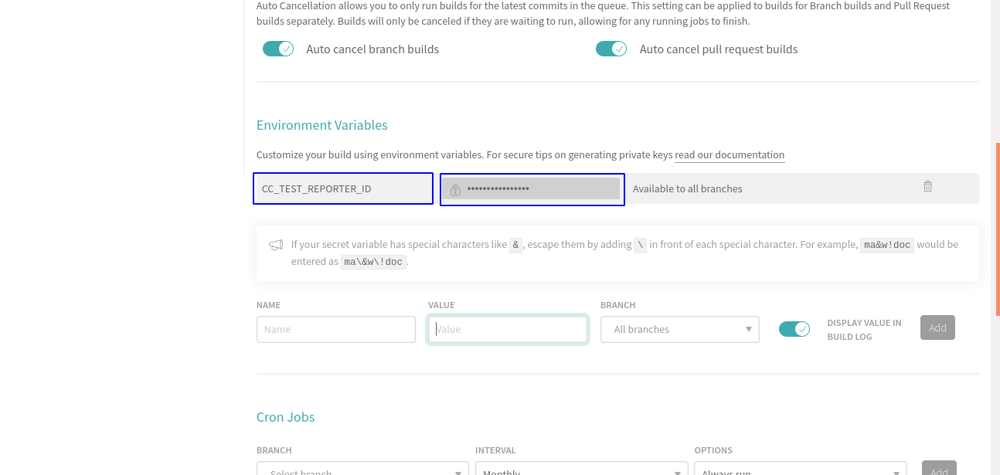
7. Similarly copy the token from the code-climate in the variable “CC_TEST_REPORTER_ID”.
❮
❯
3. Follow the steps below in codeclimate.
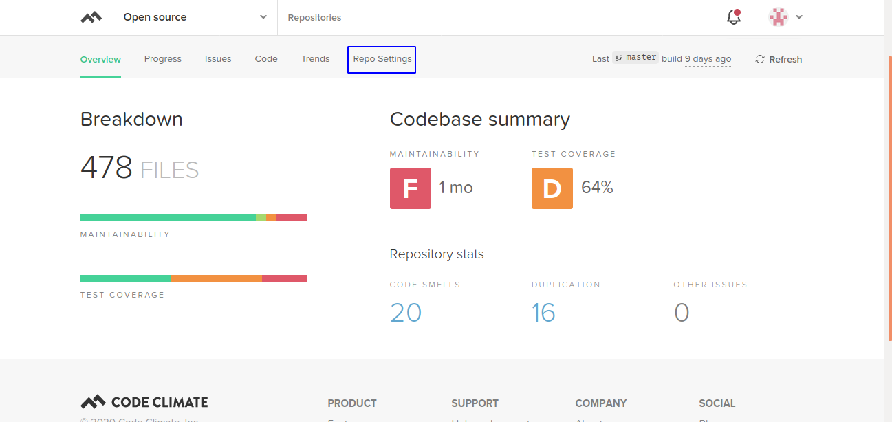
1.Go to "Repo Selecting" by clicking on the blue rectangle.
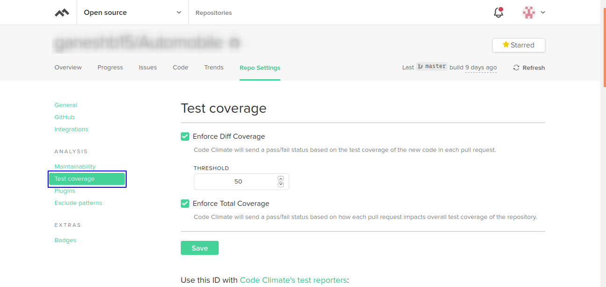
2. Go to "Test coverage" by clicking on the blue rectangle.
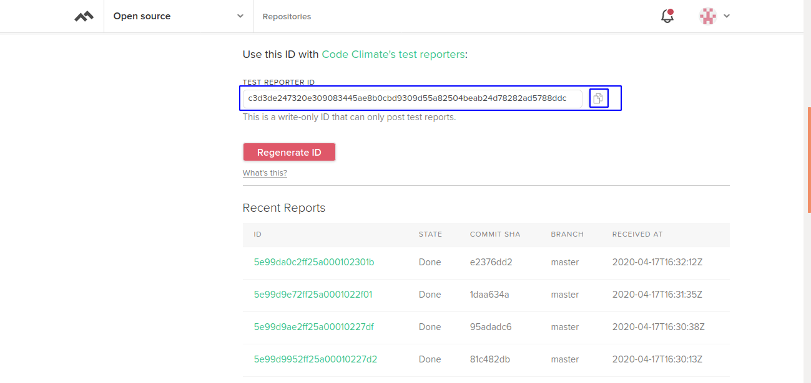
3. Copy a token and pass it in GIT as shown above.
❮
❯